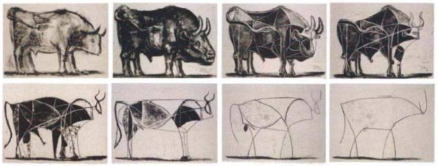
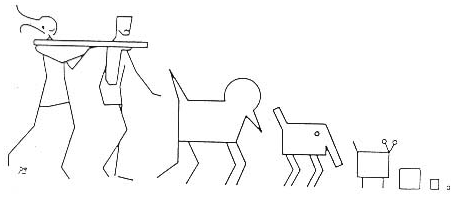

Short introduction to the Laboratory
We study the physics of soft and complex matter, i.e. composite or non-composite materials with easily deformable nano-/meso-structures, by application of external fields, such as flow fields (microfluidics), mechanical forces,
electric or magnetic fields, or by thermal fluctuations.
A main physical model system for the laboratory is clay, which are nano-layered silicate patchy particles, which can form soft and complex structures through spontaneous or guided self-assembly of particles.
Other materials that we study and use as model systems for soft and complex matter are various types of colloidal particles, cellulose, zeolites, surfactants, polymers etc.
In particular we are interested in natural and nature-inspired materials science, including geo-inspired materials such as synthetic clays.

Complexity means "reduction and removal of redundancy", as first defined by John Locke (1632-1704): "Ideas thus made up of several simple ones put together, I call complex; such as beauty, gratitude, a man, an army, the
universe". This is illustrated in art by Picasso in his famous bull drawing from 1945, shown above.

A drawing called "Various animals attempting to follow a scaling law"
by Pierre Gilles de Gennes in his book "Scaling Concepts in Polymer Physics", Cornell University Press 1979.
Developing new understanding of basic physical properties and processes in soft and complex matter from the nano-scale to the.human and geological scales. We wish to sort out what is universal, from what is specific.
Work on universal problems of practical relevance to fields of actual importance to society, ranging from nanotechnology to environmental or energy rleated topics. Examples of possible applications emerging from our
research, for future technologies include: Molecular, including CO2, capture and retention by natural and nature-inspired materials, soft matter electronics, complex photonic materials, soft scaffolds for bioengineering, new
composite cementious eco-materials.
Soft matter, Nature-inspired materials, Nano-technology, Complex matter, Pattern formation, Anomalous diffusion, Spontaneous and guided selfassembly, Smart materials, Nano-structured materials, Nano-particles, Nano-clays, Composite materials, Photonic structures, Hydrodynamics and Rheology, Microfluidics, Nanofluidics.